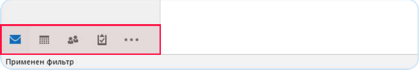
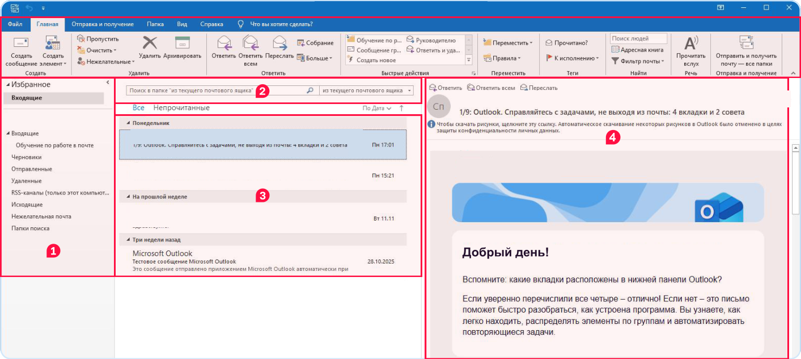
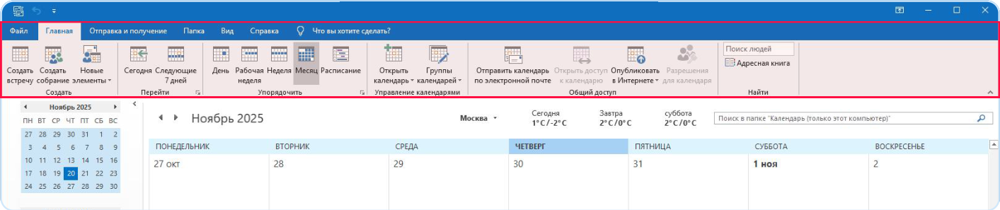
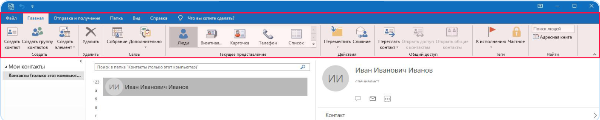
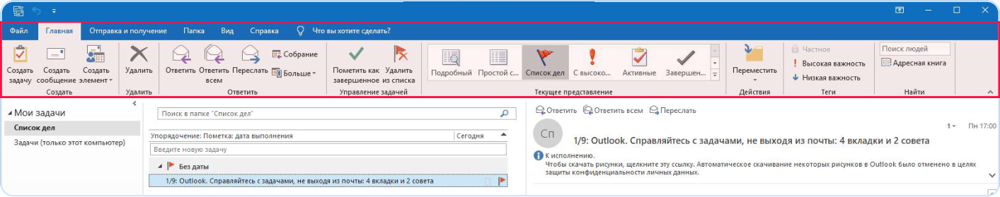
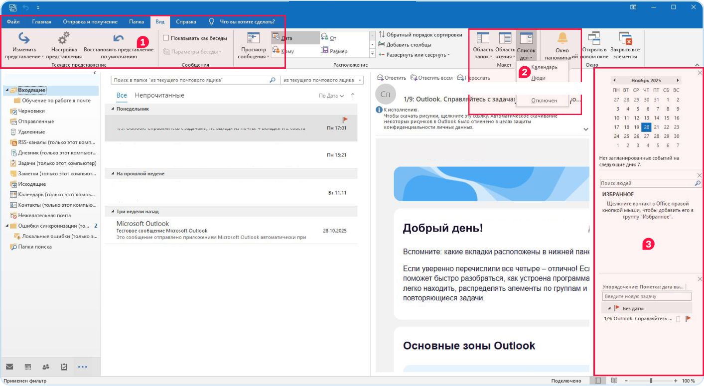

Outlook: почта, календарь, контакты и задачи
Outlook — программа для электронной почты. Это как мессенджер, только для писем: длинных, с файлами и по делу. В ней же живут календарь и список дел.
Четыре зоны
Внизу слева у Outlook четыре кнопки. Это четыре разные «комнаты» программы:

- Почта ✉️ — письма, которые пришли тебе и которые ты отправил. Клавиши Ctrl+1.
- Календарь 📅 — встречи, кружки, дни рождения и напоминания. Ctrl+2.
- Контакты 👥 — адресная книга: кто есть кто и какой у кого адрес почты. Ctrl+3.
- Задачи ✅ — список дел с датами: «сделать доклад до пятницы». Ctrl+4.
Как устроено окно почты

- Папки (слева). Входящие — сюда приходят письма. Отправленные — то, что ты послал. Черновики — начал писать, но не отправил. Нежелательная почта — спам, реклама.
- Поиск (вверху посередине). Напиши слово или фамилию — Outlook найдёт все письма, где оно есть.
- Список писем. У каждого письма видно: кто прислал, о чём (тема) и когда. Жирным — ещё не прочитанные.
- Само письмо (справа). Кликни письмо в списке — здесь покажется текст. Двойной клик — письмо откроется в отдельном окне.
Пишем письмо
- Вверху на вкладке «Главная» нажми «Создать сообщение» (самая первая кнопка) или Ctrl+N.
- Кому — адрес почты того, кому пишешь. Например
babushka@mail.ru. Начни печатать имя — Outlook подскажет из контактов. - Тема — о чём письмо, коротко: «Доклад про сериал» или «Фото с дня рождения». Письмо без темы выглядит странно.
- Текст. Начни с приветствия: «Привет, бабушка!» или «Здравствуйте, Мария Ивановна!». В конце — своё имя.
- Прикрепить файл: кнопка «Вложить файл» 📎 → выбери документ или картинку.
- Нажми «Отправить». Письмо улетело и лежит теперь в «Отправленных».
- Ответить на чужое письмо: открой его и нажми «Ответить» (стрелка ↩). Адрес и тема подставятся сами. «Переслать» — отправить это письмо кому-то ещё.
Календарь

- Перейди в календарь (Ctrl+2). Кнопки День / Неделя / Месяц меняют, сколько дней видно сразу.
- Добавить событие: двойной клик по нужному дню. Напиши название («Тренировка»), время, нажми «Сохранить и закрыть».
- Outlook напомнит о событии заранее — всплывёт окошко. Кнопка «Сегодня» возвращает к сегодняшнему дню.
Контакты и задачи

- Контакты (Ctrl+3): кнопка «Создать контакт» → имя, адрес почты, телефон → «Сохранить и закрыть». Теперь при письме достаточно набрать имя.
- Задачи (Ctrl+4): в строке «Введите новую задачу» напиши дело и нажми Enter. Сделал — поставь галочку, задача зачеркнётся.
- Пришло письмо, по которому надо что-то сделать? Нажми на флажок 🚩 рядом с ним — письмо попадёт в задачи.

Всё на одном экране

- Вкладка «Вид» → кнопка «Список дел» → отметь «Календарь» и «Задачи».
- Справа появится колонка: календарь на месяц, ближайшие события и дела. Письма, календарь и задачи видны одновременно.
Попробуй сам: вместе с родителями напиши письмо бабушке или дедушке: тема, приветствие, два предложения о себе, подпись. Прикрепи свой рисунок из Paint. Потом добавь в календарь свой день рождения.
Письмо от незнакомого адреса с просьбой «нажми на ссылку» или «введи пароль» — обман. Не открывай, покажи родителям. Помнишь урок про безопасность?